Disclaimer: ProCESS/CLONES internally implements the probability distributions using the C++11 random number distribution classes. The standard does not specify their algorithms, and the class implementations are left free for the compiler. Thus, the simulation output depends on the compiler used to compile CLONES, and because of that, the results reported in this article may differ from those obtained by the reader.
Once a phylogenetic forest has been computed, as detailed in this article, ProCESS can simulate the sequencing of the samples in the forest and return the observed data.
Simulating Sequencing Reads
Let us reload the phylogenetic forest produced in this article.
library(ProCESS)
phylo_forest <- load_phylogenetic_forest("phylo_forest.sff")
#> [█---------------------------------------] 0% [00m:00s] Loading forest [████████████████████████████████████████] 100% [00m:00s] Forest loaded
phylo_forest
#> PhylogeneticForest
#> # of trees: 1
#> # of nodes: 22471
#> # of leaves: 5364
#> samples: {"S_1_1", "S_1_2", "S_2_1", "S_2_2"}
#>
#> # of emerged SNVs and indels: 17147
#> # of emerged CNAs: 32The loaded phylogenetic forest models the cell evolution of 4
different samples: S_1_1, S_1_2,
S_2_1, and S_2_2.
We can simulate the sequencing of these samples 2.5X coverage as follows.
# let us simulate a 30x sequencing of the four sample and avoid
# the progress bar
seq_results <- simulate_seq(phylo_forest, coverage = 30, quiet = TRUE)
# let us load the dplyr library to filter the `simulate_seq` output
library(dplyr)
#>
#> Attaching package: 'dplyr'
#> The following objects are masked from 'package:stats':
#>
#> filter, lag
#> The following objects are masked from 'package:base':
#>
#> intersect, setdiff, setequal, union
seq_results$parameters
#> $sequencer
#> list()
#>
#> $reference_genome
#> NULL
#>
#> $chromosomes
#> NULL
#>
#> $coverage
#> [1] 30
#>
#> $read_size
#> [1] 150
#>
#> $insert_size_mean
#> [1] 0
#>
#> $insert_size_stddev
#> [1] 10
#>
#> $output_dir
#> [1] "ProCESS_SAM"
#>
#> $write_SAM
#> [1] FALSE
#>
#> $update_SAM
#> [1] FALSE
#>
#> $purity
#> [1] 1
#>
#> $with_normal_sample
#> [1] TRUE
#>
#> $filename_prefix
#> [1] "chr_"
#>
#> $template_name_prefix
#> [1] "r"
#>
#> $missed_SID_statistics
#> [1] FALSE
#>
#> $germline_statistics
#> [1] FALSE
#>
#> $wide_format
#> [1] TRUE
#>
#> $seed
#> [1] -1800664448
#>
#> $quiet
#> [1] TRUE
#>
#> $driver_mutations
#> mutant order type CNA_type chr start end ref alt allele
#> 1 A 0 SID <NA> 22 46510210 46510210 A C 1
#> 2 A 1 SID <NA> 22 16085675 16085683 GCCTCCCGA G 0
#> 3 A 2 CNA A 22 10303470 10503469 <NA> <NA> 2
#> 4 A 3 CNA D 22 5010000 5209999 <NA> <NA> 1
#> 5 A 4 WGD <NA> <NA> NA NA <NA> <NA> NA
#> 6 B 0 SID <NA> 22 20073563 20073563 C T 1
#> 7 B 1 SID <NA> 22 12028576 12028576 N G 1
#> src_allele code
#> 1 NA <NA>
#> 2 NA <NA>
#> 3 0 <NA>
#> 4 NA <NA>
#> 5 NA <NA>
#> 6 NA DGCR8 P26L
#> 7 NA <NA>
seq_results$mutations %>% head
#> chr from ref alt causes classes S_1_1.NV S_1_1.DP S_1_1.VAF
#> 1 22 16062591 A G SBS2 passenger 0 38 0.0000000
#> 2 22 16085675 GCCTCCCGA G A driver 17 41 0.4146341
#> 3 22 16092412 C A SBS3 passenger 0 44 0.0000000
#> 4 22 16109050 GC G ID1 pre-neoplastic 16 26 0.6153846
#> 5 22 16110762 T A SBS2 passenger 0 39 0.0000000
#> 6 22 16113256 G A SBS1 pre-neoplastic 10 27 0.3703704
#> S_1_2.NV S_1_2.DP S_1_2.VAF S_2_1.NV S_2_1.DP S_2_1.VAF S_2_2.NV S_2_2.DP
#> 1 0 24 0.0000000 0 35 0.0000000 7 40
#> 2 27 47 0.5744681 13 24 0.5416667 19 28
#> 3 0 30 0.0000000 0 33 0.0000000 10 34
#> 4 16 32 0.5000000 6 17 0.3529412 23 44
#> 5 0 41 0.0000000 0 31 0.0000000 7 26
#> 6 18 30 0.6000000 16 26 0.6153846 19 29
#> S_2_2.VAF normal.sample.NV normal.sample.DP normal.sample.VAF
#> 1 0.1750000 0 21 0
#> 2 0.6785714 0 32 0
#> 3 0.2941176 0 22 0
#> 4 0.5227273 0 29 0
#> 5 0.2692308 0 27 0
#> 6 0.6551724 0 34 0The function simulate_seq() returns a named list of two
elements: a data frame whose rows represent the mutations observed in
the simulated reads (name “mutations”) and the calling
parameters (name “parameters”).
The number of columns in the data frame “mutations”
depends on the number of samples in the phylogenetic forest. The first
four columns describe the mutation and report the chromosome and the
position in the chromosome of the mutation (columns chr and
from, respectively), the mutation reference sequence
(column ref), and the alternative sequence (column
alt). Then, there are three columns for each of the
samples: they contain the number of simulated reads affected by the
mutation, the sequencing coverage of the mutation locus, and the ratio
between these two last columns (columns
<sample name> NV,
<sample name> DP, and
<sample name> VAF, respectively).
Plotting Sequencing Data
ProCESS provides functions to plot the Variant Allele Frequency (VAF), the B-Allele Frequency (BAF), and the Depth Ratio (DR) of a sample.
# plot the VAF of the mutations sequenced in all samples
plot_VAF(seq_results)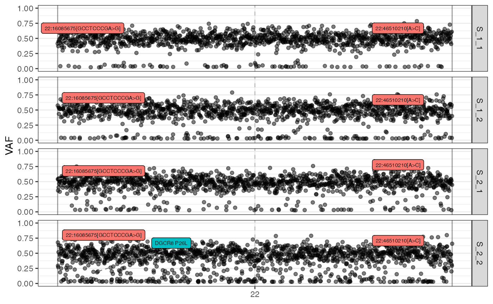
# plot the BAF of the mutations sequenced in all samples
plot_BAF(seq_results)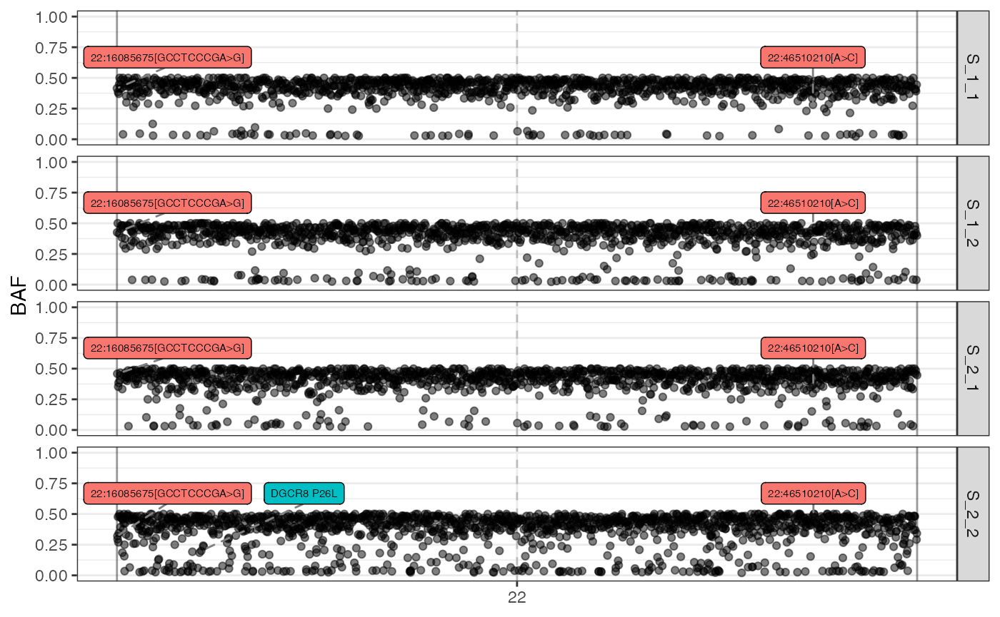
# plot the DR of the mutations sequenced in all samples
plot_DR(seq_results)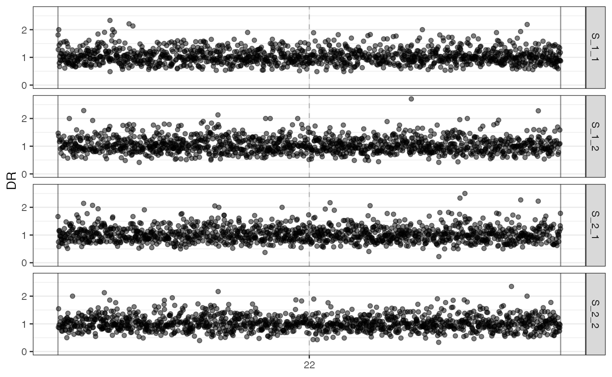
The VAF histogram and the VAF marginal distributions can be plot too.
# plotting the VAF histogram
plot_VAF_histogram(seq_results)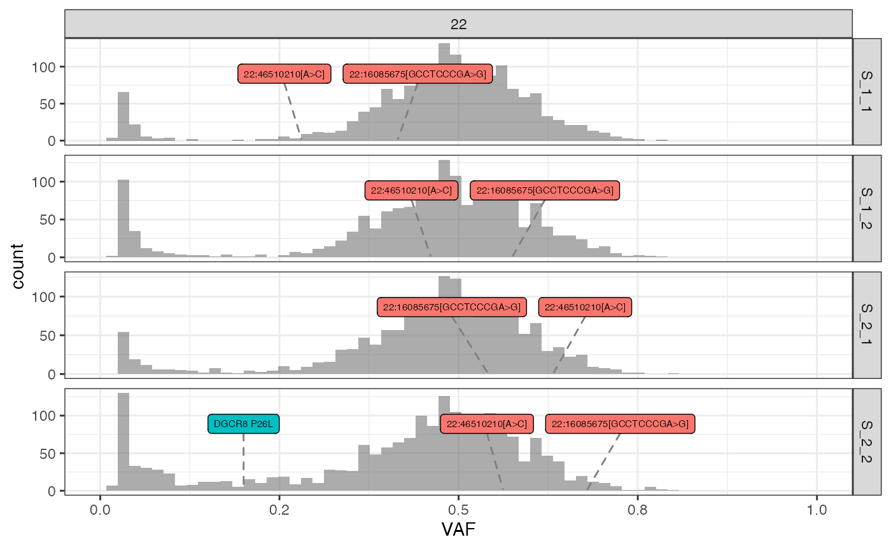
# plotting the VAF marginals
plot_VAF_marginals(seq_results, samples = c("S_1_1", "S_1_2", "S_2_2"))
#> [[1]]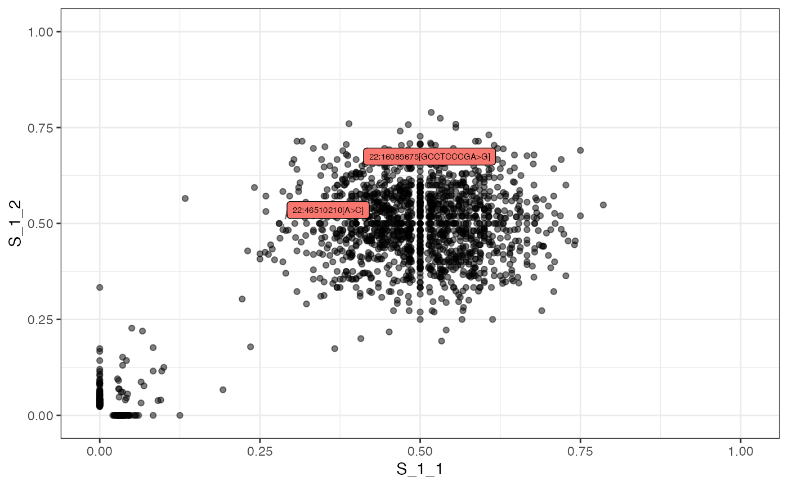
#>
#> [[2]]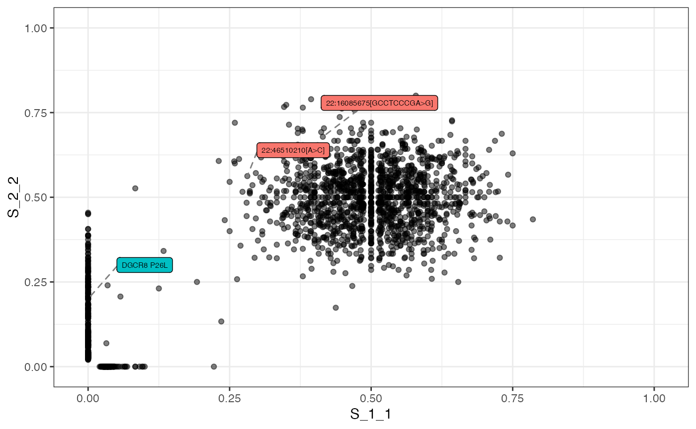
#>
#> [[3]]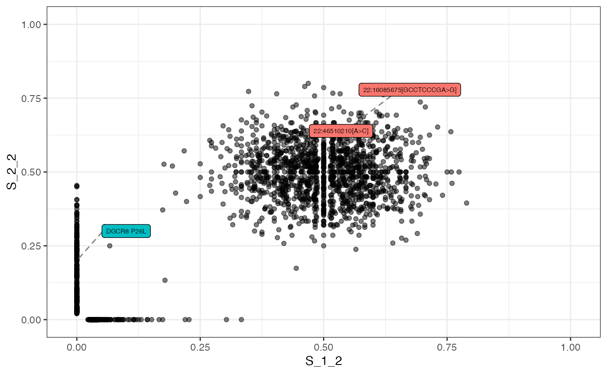
All above plotting functions allow to focus on specific samples, filter the data, and label the plotted points.
# plot the VAF of the mutations sequenced in S_2_2 filtering out
# those with VAF lower than 0.02
plot_VAF(seq_results, samples = "S_2_2", cuts = c(0.02, 1))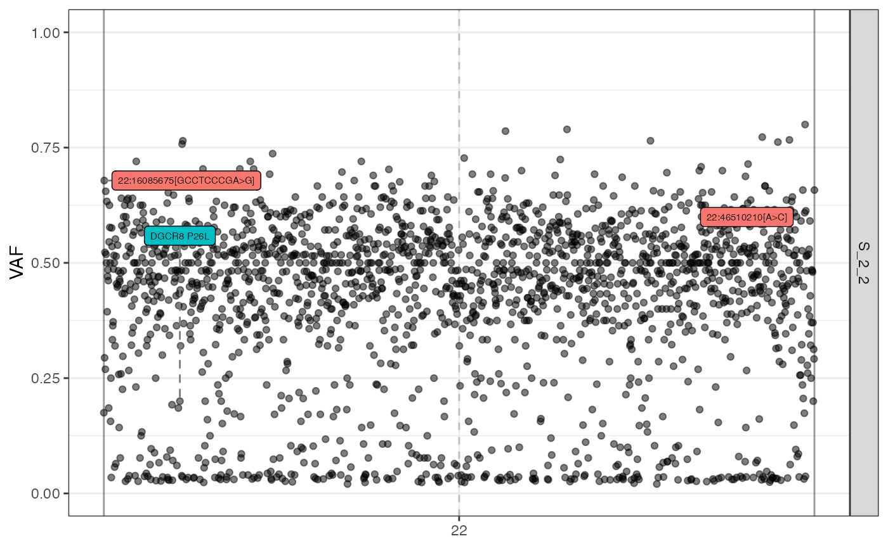
# plot the VAF and avoid the driver labels
plot_VAF(seq_results, samples = "S_2_2", cuts = c(0.02, 1),
driver_mutation_labels = FALSE)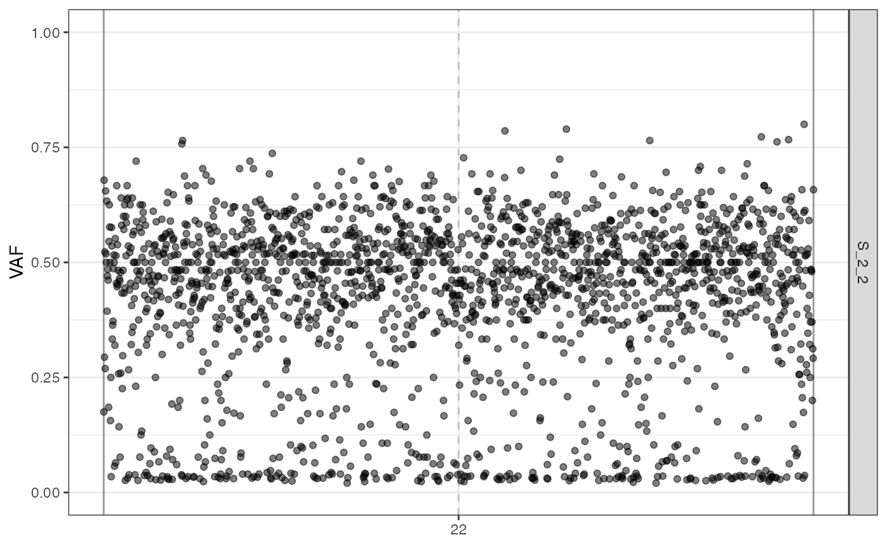
# plot the VAF and labels the point according to the mutation classes
plot_VAF(seq_results, samples = "S_2_2", cuts = c(0.02, 1),
labels = seq_results$mutations["classes"])
#> Ignoring unknown labels:
#> • fill : "classes"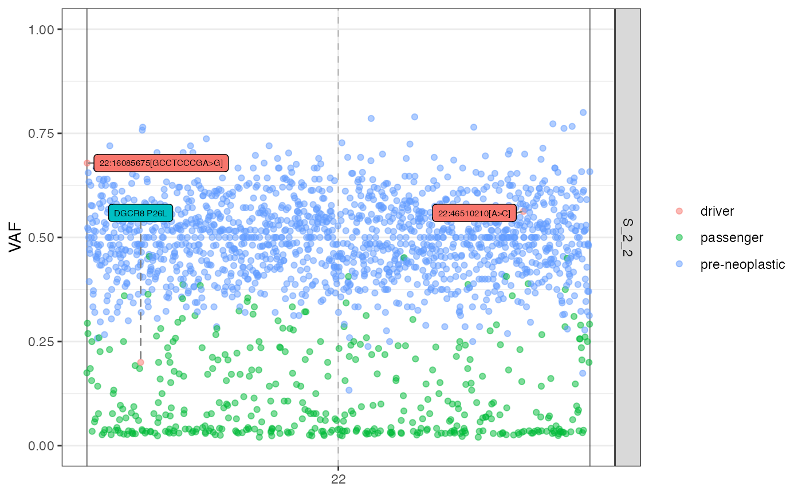
The VAF and the VAF marginal plots can be labelled.
# plotting the VAF histogram with labels
plot_VAF_histogram(seq_results, labels = seq_results$mutations["classes"],
cuts = c(0.02, 1))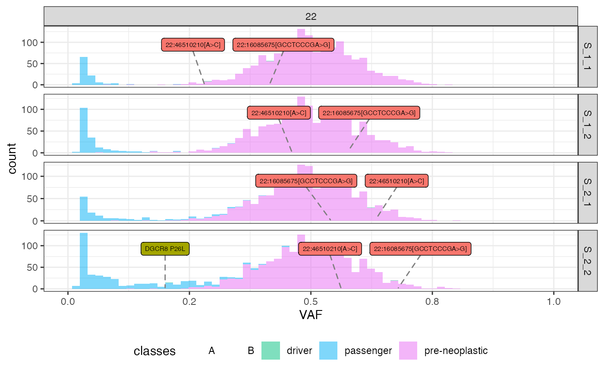
# plotting the VAF marginals and labelling it
plot_VAF_marginals(seq_results, labels = seq_results$mutations["classes"],
samples = c("S_1_1", "S_1_2", "S_2_2"))
#> [[1]]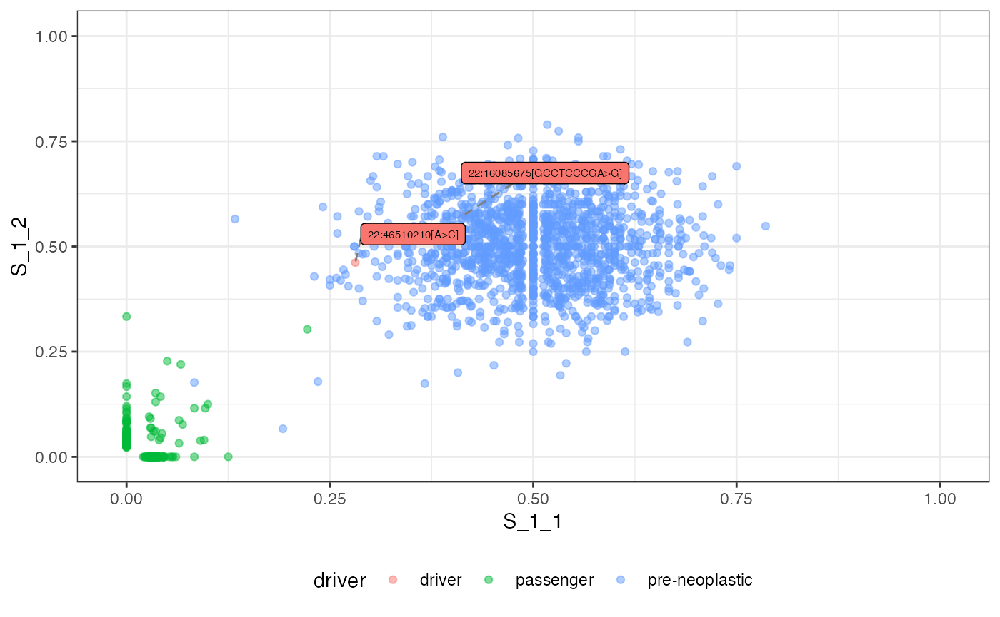
#>
#> [[2]]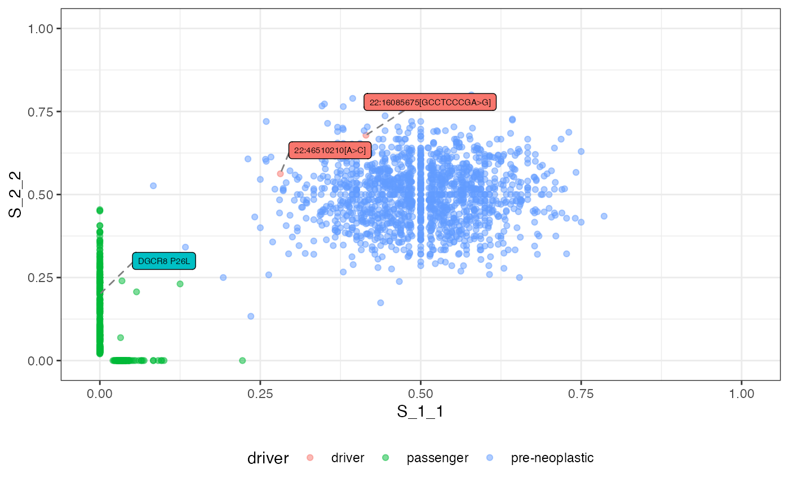
#>
#> [[3]]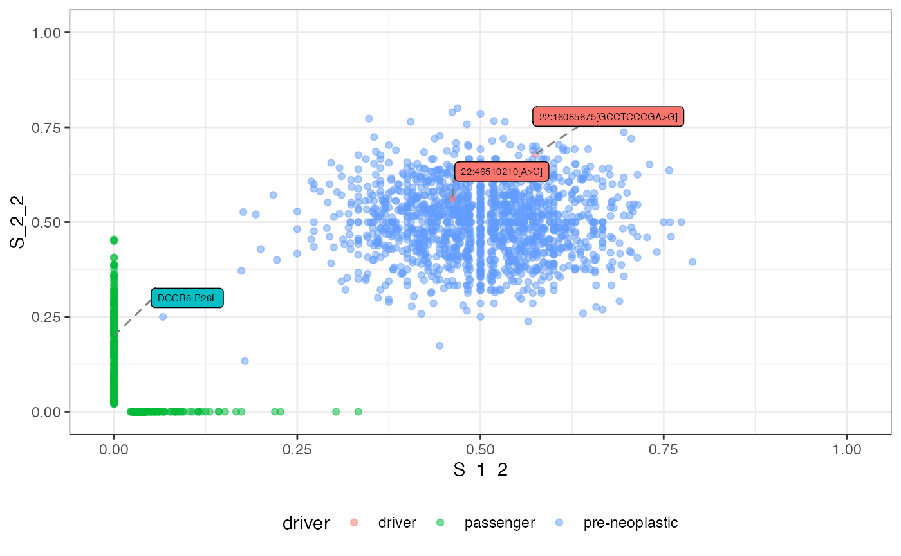
Saving the Simulated Reads
ProCESS can also save the simulated reads in the SAM format (see
(Li et al. 2009)). By setting the optional
parameter write_SAM to TRUE, the function
simulate_seq() creates the directory
ProCESS_SAM and saves the SAM files in it. Each file is
named after one of the reference genome chromosomes and contains the
simulated reads. The reads are split into read groups corresponding to
the collected samples.
seq_results <- simulate_seq(phylo_forest, coverage = 2.5, write_SAM = TRUE)
#> [█---------------------------------------] 0% [00m:00s] [█---------------------------------------] 0% [00m:00s] Processing chr. 22 [█---------------------------------------] 1% [00m:00s] Processing chr. 22 [███-------------------------------------] 6% [00m:02s] Processing chr. 22 [█████-----------------------------------] 11% [00m:03s] Processing chr. 22 [███████---------------------------------] 16% [00m:04s] Processing chr. 22 [█████████-------------------------------] 21% [00m:05s] Processing chr. 22 [███████████-----------------------------] 27% [00m:06s] Processing chr. 22 [█████████████---------------------------] 31% [00m:07s] Processing chr. 22 [███████████████-------------------------] 36% [00m:08s] Processing chr. 22 [█████████████████-----------------------] 41% [00m:09s] Processing chr. 22 [███████████████████---------------------] 46% [00m:10s] Processing chr. 22 [████████████████████--------------------] 48% [00m:11s] Processing chr. 22 [█████████████████████-------------------] 52% [00m:12s] Processing chr. 22 [███████████████████████-----------------] 55% [00m:13s] Processing chr. 22 [████████████████████████----------------] 58% [00m:14s] Processing chr. 22 [█████████████████████████---------------] 62% [00m:15s] Processing chr. 22 [███████████████████████████-------------] 66% [00m:16s] Processing chr. 22 [████████████████████████████------------] 69% [00m:17s] Processing chr. 22 [██████████████████████████████----------] 73% [00m:18s] Processing chr. 22 [███████████████████████████████---------] 76% [00m:19s] Processing chr. 22 [████████████████████████████████--------] 78% [00m:20s] Processing chr. 22 [████████████████████████████████--------] 79% [00m:21s] Processing chr. 22 [█████████████████████████████████-------] 80% [00m:22s] Processing chr. 22 [█████████████████████████████████-------] 81% [00m:23s] Processing chr. 22 [██████████████████████████████████------] 83% [00m:24s] Processing chr. 22 [██████████████████████████████████------] 84% [00m:25s] Processing chr. 22 [███████████████████████████████████-----] 85% [00m:26s] Processing chr. 22 [███████████████████████████████████-----] 86% [00m:27s] Processing chr. 22 [███████████████████████████████████-----] 87% [00m:28s] Processing chr. 22 [████████████████████████████████████----] 88% [00m:29s] Processing chr. 22 [█████████████████████████████████████---] 90% [00m:30s] Processing chr. 22 [█████████████████████████████████████---] 91% [00m:31s] Processing chr. 22 [█████████████████████████████████████---] 92% [00m:32s] Processing chr. 22 [██████████████████████████████████████--] 94% [00m:33s] Processing chr. 22 [███████████████████████████████████████-] 95% [00m:34s] Processing chr. 22 [███████████████████████████████████████-] 96% [00m:35s] Processing chr. 22 [████████████████████████████████████████] 98% [00m:36s] Processing chr. 22 [████████████████████████████████████████] 99% [00m:37s] Processing chr. 22 [████████████████████████████████████████] 99% [00m:38s] Processing chr. 22 [████████████████████████████████████████] 99% [00m:39s] Processing chr. 22 [████████████████████████████████████████] 99% [00m:40s] Processing chr. 22 [████████████████████████████████████████] 99% [00m:41s] Processing chr. 22 [████████████████████████████████████████] 100% [00m:42s] Processing chr. 22
#> [████████████████████████████████████████] 100% [00m:42s] Processing chr. 22
#> [████████████████████████████████████████] 100% [00m:42s] Processing chr. 22
#> [████████████████████████████████████████] 100% [00m:42s] Processing chr. 22
#> [████████████████████████████████████████] 100% [00m:42s] Processing chr. 22
#> [████████████████████████████████████████] 100% [00m:42s] Reads simulated
sam_files <- list.files("ProCESS_SAM/")
ex_file <- paste("ProCESS_SAM/", sam_files[1], sep = "")
for (line in readLines(ex_file, n = 10)) {
cat(paste(line, "\n"))
}
#> @HD VN:1.6 SO:unknown
#> @SQ SN:22 LN:51304566 AN:chr22, chromosome22,chromosome_22,chr_22
#> @RG ID:S_1_1 SM:S_1_1 PL:ILLUMINA
#> @RG ID:S_1_2 SM:S_1_2 PL:ILLUMINA
#> @RG ID:S_2_1 SM:S_2_1 PL:ILLUMINA
#> @RG ID:S_2_2 SM:S_2_2 PL:ILLUMINA
#> @RG ID:normal sample SM:normal sample PL:ILLUMINA
#> r2200000000000 0 22 33681158 93 150M * 0 0 TCTGGCTCCTGCTTGGACACTGACCTTTGGGTCTCAGGGTCATCATGGCTGTCTGTTTCCATCTCTGAGATACAGAAAGCAGCCTTTCCTGGGGAAAAGGTAGGCATTGTAAGGCATTTTGAAAAACCACTGAAAGCAGCAGCCCTCCTT FFFFFFFFFFFFFFFFFFFFFFFFFFFFFFFFFFFFFFFFFFFFFFFFFFFFFFFFFFFFFFFFFFFFFFFFFFFFFFFFFFFFFFFFFFFFFFFFFFFFFFFFFFFFFFFFFFFFFFFFFFFFFFFFFFFFFFFFFFFFFFFFFFFFFF RG:Z:S_1_1 NM:i:0 CB:Z:00002ONO
#> r2200000000002 0 22 35482422 93 150M * 0 0 TGGCACAAATGAAAAGTAGGACGGAAAGCTCCTTTCATTCAGTTTATCTTTCCAGGATATATGAAAAGGGACCAGCTGGAAGACTAGCCTCACTCTGTCCTCGAAAGCCTGAGCTTTCATTCAACTCCCTATTTCCATGCAAAGACGCTG FFFFFFFFFFFFFFFFFFFFFFFFFFFFFFFFFFFFFFFFFFFFFFFFFFFFFFFFFFFFFFFFFFFFFFFFFFFFFFFFFFFFFFFFFFFFFFFFFFFFFFFFFFFFFFFFFFFFFFFFFFFFFFFFFFFFFFFFFFFFFFFFFFFFFF RG:Z:S_1_1 NM:i:0 CB:Z:00002ONO
#> r2200000000005 16 22 23087280 93 150M * 0 0 ACAAAGCTCTGGGATGTCTCCCCATGGCCTCGACCTCTCACGTGCTACCTCTCCTCACTCTTTGCACAGATGCTGCCCCAGGCTAAGCCCCCACAGGACCCTAATCCTAGTCCTGACCCTGAGCTCAGCCCAGGTGATATTTCAGGAGAT FFFFFFFFFFFFFFFFFFFFFFFFFFFFFFFFFFFFFFFFFFFFFFFFFFFFFFFFFFFFFFFFFFFFFFFFFFFFFFFFFFFFFFFFFFFFFFFFFFFFFFFFFFFFFFFFFFFFFFFFFFFFFFFFFFFFFFFFFFFFFFFFFFFFFF RG:Z:S_1_1 NM:i:0 CB:Z:00002ONOEach SAM file contains the reads produced by simulating the
sequencing of all the samples. The command-line tools samtools can be used to
split the reads by sample.
foo@bar % samtools split -f "%*_%\!.sam" ProCESS_SAM/chr_22.sam
foo@bar % ls chr_22_*
chr_22_S_1_1.sam chr_22_S_1_2.sam chr_22_S_2_1.sam chr_22_S_2_2.samThe resulting files are named after the samples, each containing the reads of only one sample.
Please refer to the samtools split
manual for more details.
The simulate_seq() parameter output_dir
sets the SAM output directory. See the following section for usage
examples of this parameter.
Sample Purity
The sample purity represents the concentration of tumour cells in a sample. More formally, it is the ratio of the number of tumour cells in the total number of cells in the sample, whether tumour or normal (i.e., cells with the sample to the germline and pre-neoplastic mutations).
ProCESS can simulate different sample purity in sequencing simulations.
# simulate the sequencing of a sample in which 70% of the cells are
# tumour cells
seq_results <- simulate_seq(phylo_forest, coverage = 2.5, purity = 0.7,
write_SAM = TRUE, output_dir = "SAM_0.7")
#> [█---------------------------------------] 0% [00m:00s] [█---------------------------------------] 0% [00m:00s] Processing chr. 22 [█---------------------------------------] 2% [00m:00s] Processing chr. 22 [███-------------------------------------] 7% [00m:01s] Processing chr. 22 [█████-----------------------------------] 12% [00m:02s] Processing chr. 22 [███████---------------------------------] 17% [00m:03s] Processing chr. 22 [█████████-------------------------------] 22% [00m:04s] Processing chr. 22 [████████████----------------------------] 28% [00m:05s] Processing chr. 22 [██████████████--------------------------] 33% [00m:06s] Processing chr. 22 [████████████████------------------------] 38% [00m:07s] Processing chr. 22 [██████████████████----------------------] 44% [00m:08s] Processing chr. 22 [███████████████████---------------------] 47% [00m:09s] Processing chr. 22 [█████████████████████-------------------] 51% [00m:10s] Processing chr. 22 [██████████████████████------------------] 54% [00m:11s] Processing chr. 22 [████████████████████████----------------] 58% [00m:12s] Processing chr. 22 [█████████████████████████---------------] 61% [00m:13s] Processing chr. 22 [███████████████████████████-------------] 65% [00m:14s] Processing chr. 22 [████████████████████████████------------] 68% [00m:15s] Processing chr. 22 [█████████████████████████████-----------] 72% [00m:16s] Processing chr. 22 [███████████████████████████████---------] 75% [00m:17s] Processing chr. 22 [███████████████████████████████---------] 77% [00m:19s] Processing chr. 22 [████████████████████████████████--------] 79% [00m:20s] Processing chr. 22 [█████████████████████████████████-------] 80% [00m:21s] Processing chr. 22 [█████████████████████████████████-------] 81% [00m:22s] Processing chr. 22 [█████████████████████████████████-------] 82% [00m:23s] Processing chr. 22 [██████████████████████████████████------] 84% [00m:24s] Processing chr. 22 [███████████████████████████████████-----] 85% [00m:25s] Processing chr. 22 [███████████████████████████████████-----] 86% [00m:26s] Processing chr. 22 [███████████████████████████████████-----] 87% [00m:27s] Processing chr. 22 [████████████████████████████████████----] 88% [00m:28s] Processing chr. 22 [████████████████████████████████████----] 89% [00m:29s] Processing chr. 22 [█████████████████████████████████████---] 91% [00m:30s] Processing chr. 22 [█████████████████████████████████████---] 92% [00m:31s] Processing chr. 22 [██████████████████████████████████████--] 93% [00m:32s] Processing chr. 22 [██████████████████████████████████████--] 94% [00m:33s] Processing chr. 22 [███████████████████████████████████████-] 96% [00m:34s] Processing chr. 22 [███████████████████████████████████████-] 97% [00m:35s] Processing chr. 22 [████████████████████████████████████████] 98% [00m:36s] Processing chr. 22 [████████████████████████████████████████] 99% [00m:37s] Processing chr. 22 [████████████████████████████████████████] 99% [00m:38s] Processing chr. 22 [████████████████████████████████████████] 99% [00m:39s] Processing chr. 22 [████████████████████████████████████████] 99% [00m:40s] Processing chr. 22 [████████████████████████████████████████] 99% [00m:41s] Processing chr. 22 [████████████████████████████████████████] 100% [00m:42s] Processing chr. 22
#> [████████████████████████████████████████] 100% [00m:42s] Processing chr. 22
#> [████████████████████████████████████████] 100% [00m:42s] Processing chr. 22
#> [████████████████████████████████████████] 100% [00m:42s] Processing chr. 22
#> [████████████████████████████████████████] 100% [00m:42s] Reads simulated
sam_files <- list.files("SAM_0.7/")
ex_file <- paste("SAM_0.7/", sam_files[1], sep = "")
for (line in readLines(ex_file, n = 10)) {
cat(paste(line, "\n"))
}
#> @HD VN:1.6 SO:unknown
#> @SQ SN:22 LN:51304566 AN:chr22, chromosome22,chromosome_22,chr_22
#> @RG ID:S_1_1 SM:S_1_1 PL:ILLUMINA
#> @RG ID:S_1_2 SM:S_1_2 PL:ILLUMINA
#> @RG ID:S_2_1 SM:S_2_1 PL:ILLUMINA
#> @RG ID:S_2_2 SM:S_2_2 PL:ILLUMINA
#> @RG ID:normal sample SM:normal sample PL:ILLUMINA
#> r2200000000002 16 22 30598404 93 150M * 0 0 TATCAGCTTACATCGGAGGAATGGATTTAAAAAAAAAAAAAGATTGAAATGAACACAAGGGCTTTCCCTGGCAGGCCACATGCAAAAAAAGTCAGCTCCTTCACACCATCACTCATGTCCAACCCTCAGTGGAGAAGTTTTATCTGCACA FFFFFFFFFFFFFFFFFFFFFFFFFFFFFFFFFFFFFFFFFFFFFFFFFFFFFFFFFFFFFFFFFFFFFFFFFFFFFFFFFFFFFFFFFFFFFFFFFFFFFFFFFFFFFFFFFFFFFFFFFFFFFFFFFFFFFFFFFFFFFFFFFFFFFF RG:Z:S_1_1 NM:i:0 CB:Z:00002ONO
#> r2200000000003 0 22 26513292 93 150M * 0 0 AGAAACAGAAAGCCAAATACCACATATTCTCACTTATAAGCTAGAGCTAAACATTGGGCACTTATGGACATAAAGATGATAACAATAGACACTTGGAACTAATGGAGGGGGGAGACGGGAGATGGACAAGGCTTTAAAAAAAACTAGCTC FFFFFFFFFFFFFFFFFFFFFFFFFFFFFFFFFFFFFFFFFFFFFFFFFFFFFFFFFFFFFFFFFFFFFFFFFFFFFFFFFFFFFFFFFFFFFFFFFFFFFFFFFFFFFFFFFFFFFFFFFFFFFFFFFFFFFFFFFFFFFFFFFFFFFF RG:Z:S_1_1 NM:i:0 CB:Z:00002ONO
#> r2200000000004 16 22 20344991 93 150M * 0 0 AACACCTGGCCTTTTCTTTTCTGCCTCTGCCAAACATCACAGCCTTTGGGTTGGATTAGTCAGCACCCCTTGGGATTGTGCAGAAGAGGTTTGGGGTTGCATCGAGTGTCACCTGTGGTGAACAGAATCTGAGGGACACAACTCTCTCAC FFFFFFFFFFFFFFFFFFFFFFFFFFFFFFFFFFFFFFFFFFFFFFFFFFFFFFFFFFFFFFFFFFFFFFFFFFFFFFFFFFFFFFFFFFFFFFFFFFFFFFFFFFFFFFFFFFFFFFFFFFFFFFFFFFFFFFFFFFFFFFFFFFFFFF RG:Z:S_1_1 NM:i:0 CB:Z:00002ONOThe default value of the parameter purity is 1, i.e.,
simulate_seq() assumes all the cells in the sample to be
neoplastic by default.
The function simulate_normal_seq() simulates the
sequencing of a sample whose cells have germline and pre-neoplastic
mutations. The pre-neoplastic mutations can be avoided by setting the
optional parameter with_pre_neoplastic.
Simulating Sequencing Errors
To simulate sequencing errors, users need to specify a sequencer to
the function simulate_seq().
At the moment, there are only two classes implementing sequencers:
the ErrorlessIlluminaSequencer class and the
BasicIlluminaSequencer classes.
The ErrorlessIlluminaSequencer Class
This class models a perfect Illumina sequencer. No sequencing errors are produced, and all the bases have the maximum quality.
The following code simulates the sequencing by using this kind of sequencer.
# build an error-free Illumina sequencer
no_error_seq <- ErrorlessIlluminaSequencer()
# let us simulate a 2.5x sequencing of the four sample
# on the error-free sequencer
seq_results <- simulate_seq(phylo_forest, sequencer = no_error_seq,
coverage = 2.5)The BasicIlluminaSequencer Class
This class sets a sequencing error rate independent of the base in which the error occurs, from the base position in the read and the read position on the genome.
# build a basic Illumina sequencer model in which errors occur
# at rate 4e-3 per base
basic_seq <- BasicIlluminaSequencer(4e-3)
# let us simulate a 2.5x sequencing of the four sample
# on the error-free sequencer
seq_results <- simulate_seq(phylo_forest, sequencer = basic_seq,
coverage = 2.5, write_SAM = TRUE)Chromosome Sequencing
The function simulate_seq() allows users to simulate the
sequencing of a selection of the reference chromosomes by using the
parameter chromosomes.
# let us simulate a 2.5x sequencing of the chromosomes 22 and
# X of the four sample
seq_results <- simulate_seq(phylo_forest, chromosomes = c("22", "X"),
coverage = 2.5, write_SAM = TRUE)Updating the SAM Output Directory
Users may want to simulate sequencing in multiple steps, for
instance, by splitting it by chromosome or reaching the aimed coverage
with different simulations. However, ProCESS prevents successive writing
in the same directory by default. The Boolean parameter
update_SAM allows multiple writes in the same
directory.
# the default SAM directory already exists
sam_files <- list.files("ProCESS_SAM/")
# since the default save directory already exists, any call to
# `simulate_seq` throws an error
tryCatch(
{
simulate_seq(phylo_forest, coverage = 2.5, write_SAM = TRUE)
},
error = function(e) {
print(e)
}
)
#> <std::domain_error in eval(expr, envir): "ProCESS_SAM" already exists>
# setting `update_SAM` to TRUE enables successive writing in
# the output directory
seq_results <- simulate_seq(phylo_forest, coverage = 2.5,
write_SAM = TRUE, update_SAM = TRUE)
#> [█---------------------------------------] 0% [00m:00s] [█---------------------------------------] 0% [00m:00s] Processing chr. 22 [█---------------------------------------] 2% [00m:00s] Processing chr. 22 [███-------------------------------------] 7% [00m:01s] Processing chr. 22 [█████-----------------------------------] 12% [00m:02s] Processing chr. 22 [███████---------------------------------] 17% [00m:04s] Processing chr. 22 [█████████-------------------------------] 22% [00m:05s] Processing chr. 22 [████████████----------------------------] 28% [00m:06s] Processing chr. 22 [██████████████--------------------------] 33% [00m:07s] Processing chr. 22 [████████████████------------------------] 38% [00m:08s] Processing chr. 22 [██████████████████----------------------] 44% [00m:09s] Processing chr. 22 [███████████████████---------------------] 47% [00m:10s] Processing chr. 22 [█████████████████████-------------------] 51% [00m:11s] Processing chr. 22 [██████████████████████------------------] 54% [00m:12s] Processing chr. 22 [████████████████████████----------------] 58% [00m:13s] Processing chr. 22 [█████████████████████████---------------] 61% [00m:14s] Processing chr. 22 [██████████████████████████--------------] 64% [00m:15s] Processing chr. 22 [████████████████████████████------------] 68% [00m:16s] Processing chr. 22 [█████████████████████████████-----------] 71% [00m:17s] Processing chr. 22 [███████████████████████████████---------] 75% [00m:18s] Processing chr. 22 [███████████████████████████████---------] 77% [00m:19s] Processing chr. 22 [████████████████████████████████--------] 79% [00m:20s] Processing chr. 22 [█████████████████████████████████-------] 80% [00m:21s] Processing chr. 22 [█████████████████████████████████-------] 81% [00m:22s] Processing chr. 22 [██████████████████████████████████------] 83% [00m:23s] Processing chr. 22 [██████████████████████████████████------] 84% [00m:24s] Processing chr. 22 [███████████████████████████████████-----] 85% [00m:25s] Processing chr. 22 [███████████████████████████████████-----] 86% [00m:26s] Processing chr. 22 [███████████████████████████████████-----] 87% [00m:27s] Processing chr. 22 [████████████████████████████████████----] 88% [00m:28s] Processing chr. 22 [████████████████████████████████████----] 89% [00m:29s] Processing chr. 22 [█████████████████████████████████████---] 91% [00m:30s] Processing chr. 22 [█████████████████████████████████████---] 92% [00m:31s] Processing chr. 22 [██████████████████████████████████████--] 93% [00m:32s] Processing chr. 22 [███████████████████████████████████████-] 95% [00m:33s] Processing chr. 22 [███████████████████████████████████████-] 96% [00m:34s] Processing chr. 22 [████████████████████████████████████████] 98% [00m:35s] Processing chr. 22 [████████████████████████████████████████] 99% [00m:36s] Processing chr. 22 [████████████████████████████████████████] 99% [00m:37s] Processing chr. 22 [████████████████████████████████████████] 99% [00m:38s] Processing chr. 22 [████████████████████████████████████████] 99% [00m:39s] Processing chr. 22 [████████████████████████████████████████] 99% [00m:40s] Processing chr. 22 [████████████████████████████████████████] 100% [00m:41s] Processing chr. 22
#> [████████████████████████████████████████] 100% [00m:41s] Processing chr. 22
#> [████████████████████████████████████████] 100% [00m:41s] Processing chr. 22
#> [████████████████████████████████████████] 100% [00m:41s] Processing chr. 22
#> [████████████████████████████████████████] 100% [00m:41s] Processing chr. 22
#> [████████████████████████████████████████] 100% [00m:41s] Reads simulatedWhen the output directory already contains a SAM file associated with
a chromosome, the alignments on that chromosome are saved in a file
whose name is the first available, having the format
"chr_{chromosome name}_{natural number}.sam".
list.files("ProCESS_SAM/")
#> [1] "chr_22_0.sam" "chr_22.sam"